Best Wonders of the World
Argentina
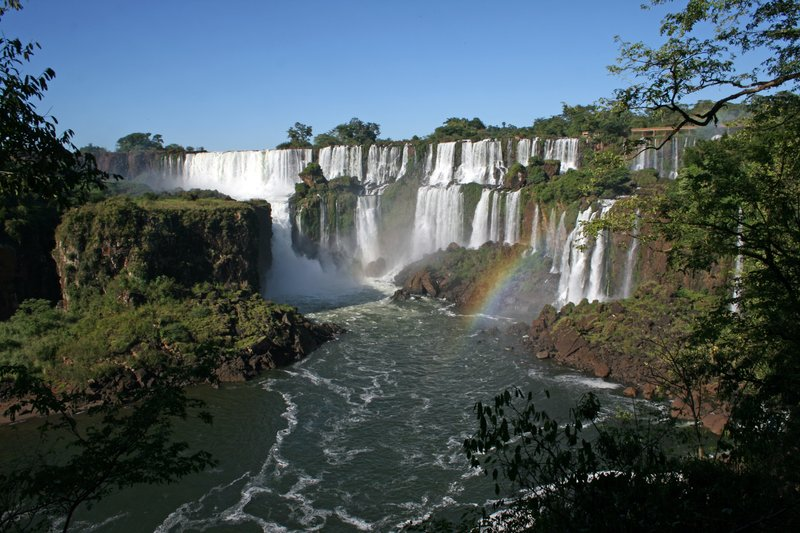
Iguazu Falls
Argentina / Brazil border
A vast system of waterfalls straddling the Iguazu River, forming one of the world's largest waterfall complexes — a New Seven Wonders of Nature.
Brazil
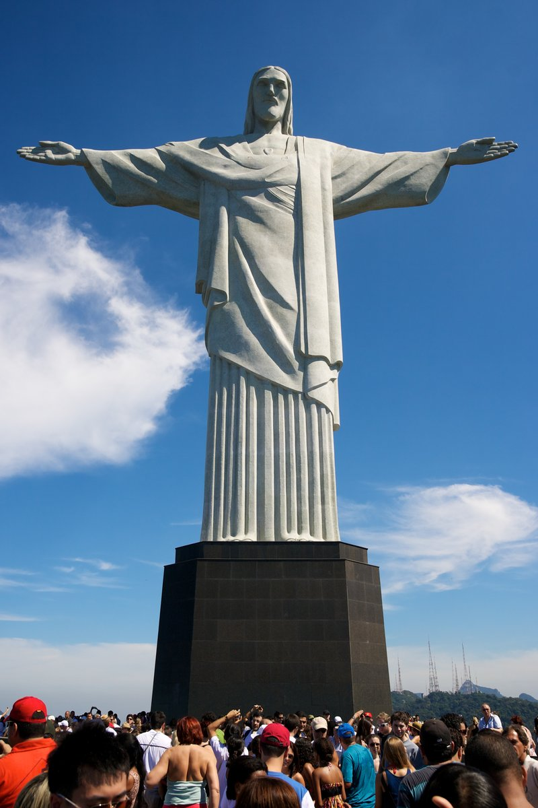
Christ the Redeemer
Rio de Janeiro, Brazil
An Art Deco statue of Jesus crowning Corcovado mountain, an icon of Rio and Brazil and one of the New Seven Wonders of the World.

Amazon Rainforest
9 countries across South America
The largest tropical rainforest on Earth, spanning much of the Amazon basin and holding a substantial share of the planet's biodiversity — a New Seven Wonders of Nature.
China

Great Wall of China
Northern China
A series of fortifications built across northern China over many dynasties to guard against invasions — one of the New Seven Wonders of the World.
Egypt
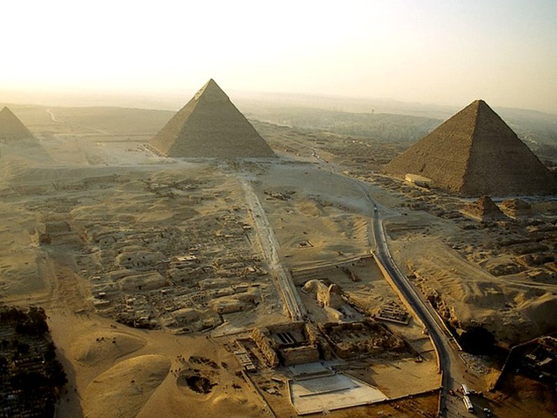
Great Pyramid of Giza
Giza, Egypt
The oldest and largest of the Giza pyramids, built as a tomb for the pharaoh Khufu and the only one of the ancient Seven Wonders still standing.
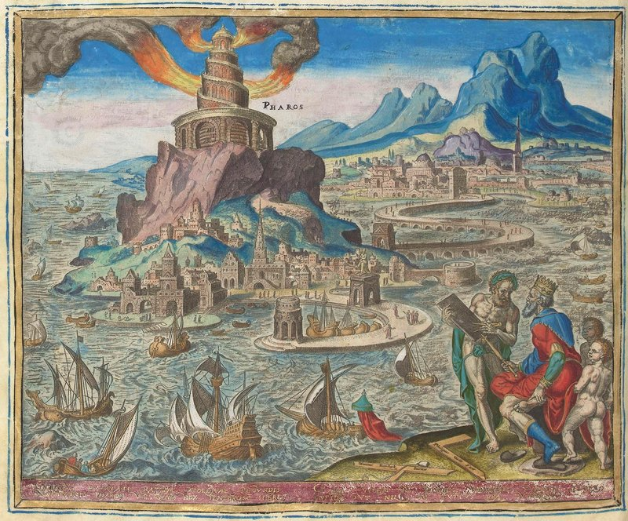
Lighthouse of Alexandria
Alexandria, Egypt
One of the ancient Seven Wonders, a towering lighthouse that guided ships into the harbor for centuries before earthquakes brought it down.
Greece
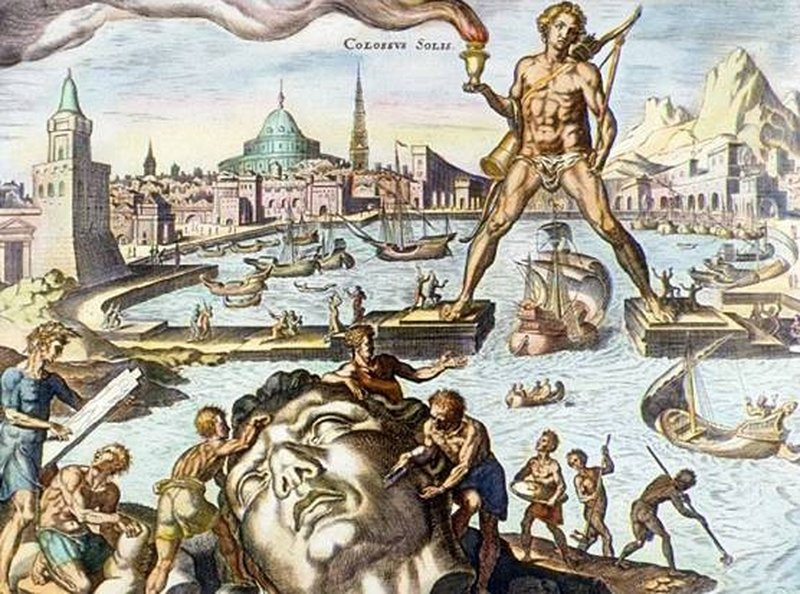
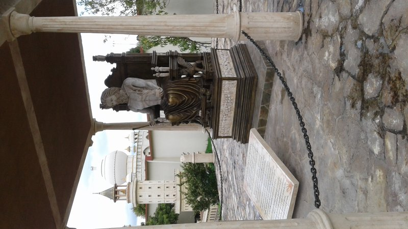
India
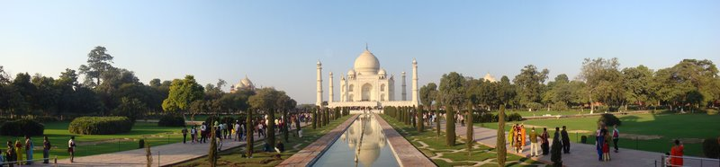
Taj Mahal
Agra, India
A white marble mausoleum commissioned by the Mughal emperor Shah Jahan for his wife, celebrated as a pinnacle of Indo-Islamic architecture and one of the New Seven Wonders.
Indonesia
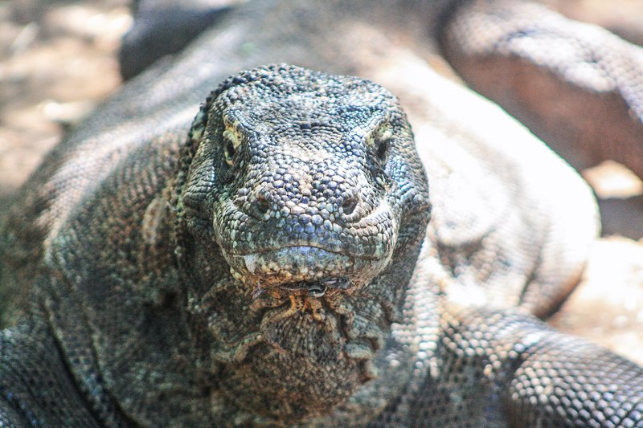
Komodo Island
East Nusa Tenggara, Indonesia
The main habitat of the Komodo dragon, the world's largest living lizard, protected within a national park spanning several rugged Indonesian islands — a New Seven Wonders of Nature.
Iraq
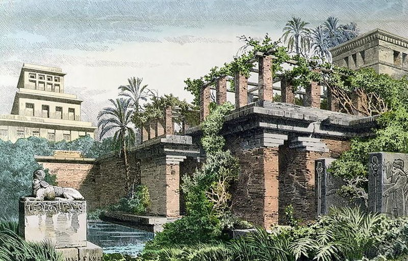
Italy

Colosseum
Rome, Italy
The largest amphitheater ever built, host to gladiatorial contests and public spectacles in ancient Rome and one of the New Seven Wonders of the World.
Jordan
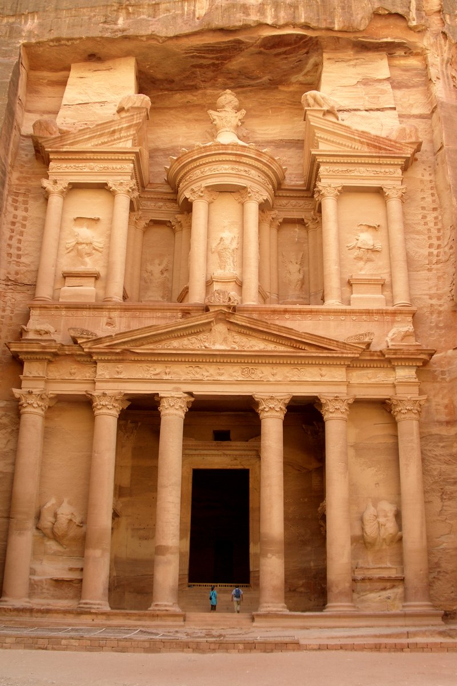
Petra
Ma'an Governorate, Jordan
An ancient Nabataean city carved into rose-colored sandstone cliffs, reached through a narrow gorge and famed for its rock-cut temples and tombs — one of the New Seven Wonders.
Mexico
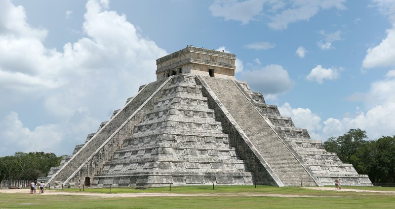
Chichén Itzá
Yucatán, Mexico
A major Maya city centered on the stepped pyramid of El Castillo, whose design encodes the solar calendar — one of the New Seven Wonders of the World.
Peru
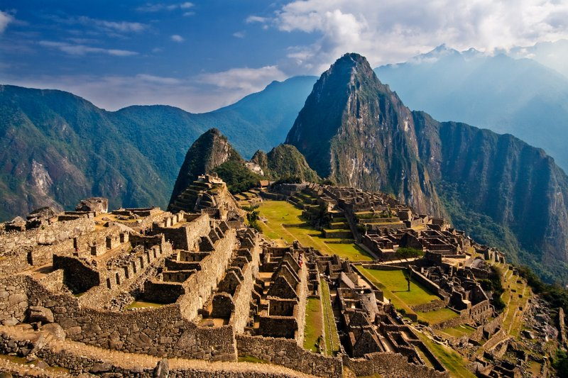
Machu Picchu
Cusco Region, Peru
A 15th-century Inca citadel set high on an Andean ridge, abandoned and unknown to the outside world until 1911 — one of the New Seven Wonders of the World.
Philippines
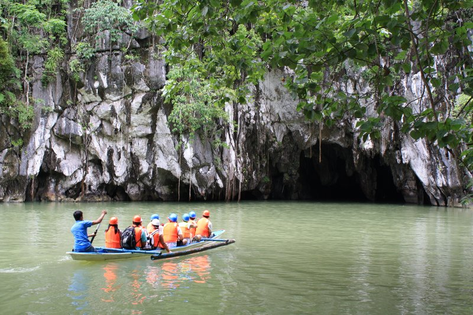
Puerto Princesa Underground River
Palawan, Philippines
A navigable subterranean river winding through a limestone cave system to the sea, one of the longest of its kind and a New Seven Wonders of Nature.
South Africa
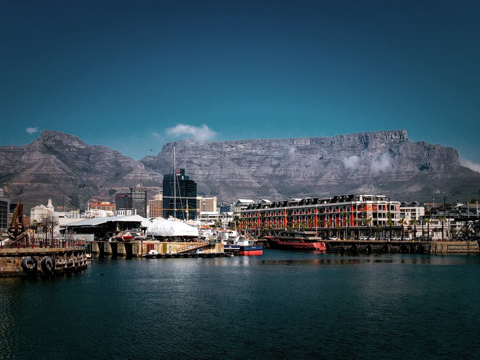
Table Mountain
Cape Town, South Africa
A flat-topped mountain overlooking Cape Town, cloaked in exceptionally rich fynbos flora and named a New Seven Wonders of Nature.
South Korea
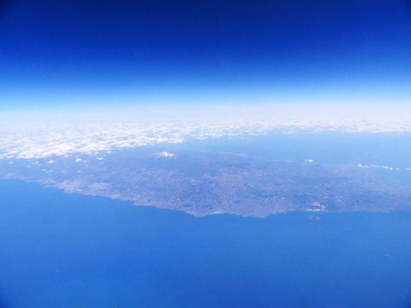
Jeju Island
Jeju Province, South Korea
A volcanic island off South Korea crowned by Hallasan, the country's highest peak, with lava tubes and craters and status as a New Seven Wonders of Nature.
Turkey
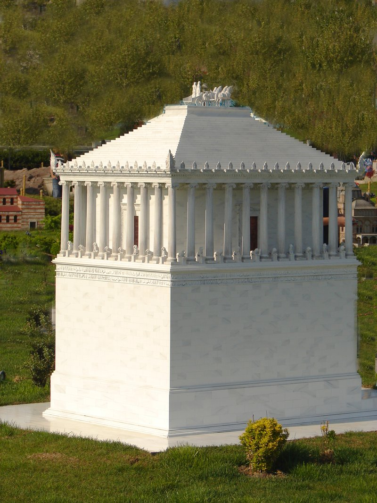
Mausoleum at Halicarnassus
Bodrum, Turkey
An elaborate tomb built for the Persian satrap Mausolus, one of the ancient Seven Wonders and the origin of the word "mausoleum."
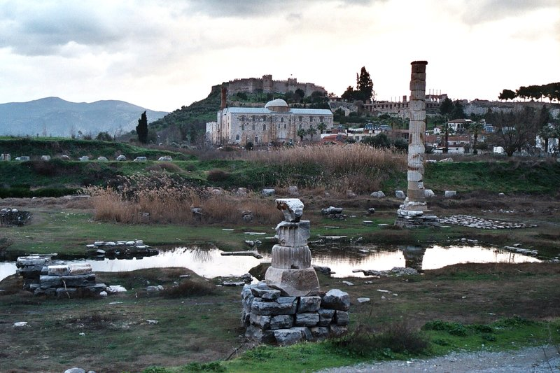
Temple of Artemis at Ephesus
Selçuk, Turkey
A vast Greek temple dedicated to the goddess Artemis, rebuilt several times and counted among the ancient Seven Wonders; only fragments survive today.
Vietnam
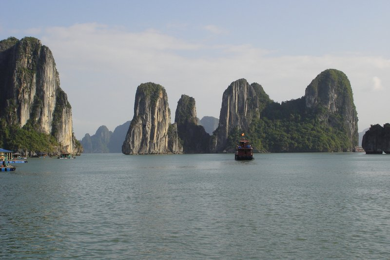
Ha Long Bay
Quang Ninh, Vietnam
A bay in northern Vietnam studded with thousands of limestone karst islands and caves rising from emerald water — a New Seven Wonders of Nature.